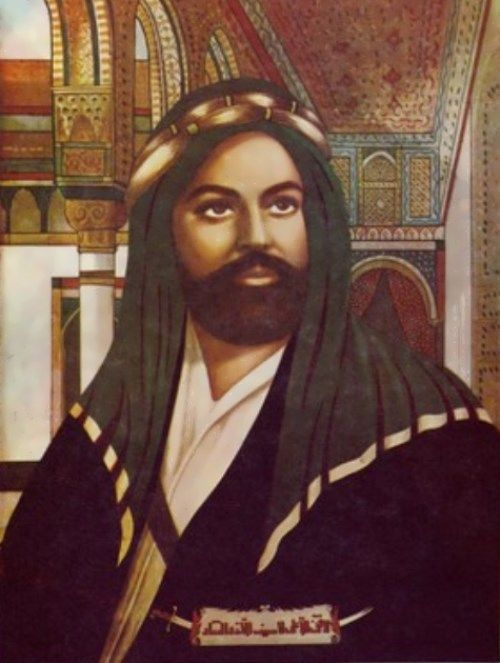

Source: PinterestIslam, whose followers make up religious majorities in lands as Far East as Malaysia, was the engine behind the great caliphates such as the Abbasid, Umayyad, and Ottoman, which ruled empires stretching as far West as the Iberian Peninsula, consisted of countless ethnic groups, and the last of which was abolished only 100 years ago.
The successful and bloody siege (and later sacking and rape) of the great cultural capital of the Christian world, Constantinople, by Mehmed II (nicknamed The Conqueror) marked the beginning of the Middle Ages, a time when Europe degenerated into a de-urbanized wasteland of superstition and serfdom.
However, the Middle East, under the control of the Umayyad Caliphate, had its golden age. The Arabian economy replaced the Roman economy in dominating trade in the Mediterranean; Islamists, unlike early Christians, saw the value in pursuing trade and profit. Breakthroughs in medicine, astronomy, mathematics, architecture, and philosophy were commonplace during this golden age, when Islam spread like wildfire.
It wouldn't be far-fetched to say that religion is one of the most common reasons for war; wars fought on behalf of Islam have created upheaval in the Middle East since its inception and continue to ravage the reason in our present day.
Like Christianity, the teachings of Islam can be traced back to one person. Born in Mecca in 570 CE, Muhammad had to wait until he was 40 before receiving his first revelation from Allah (known to the West as God). Visited by the angel Jibril (known to the West as Gabriel), he began to hear what later would result in the Qu'ran, which continues to be the rule of law in Middle Eastern countries today. One only has to look at how laws in the Middle East and Sub-Saharan Africa punish homosexuals by death to understand the influence of his legacy.